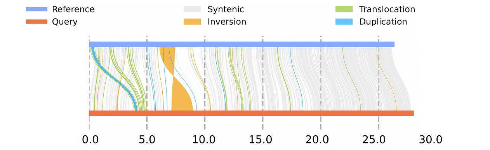
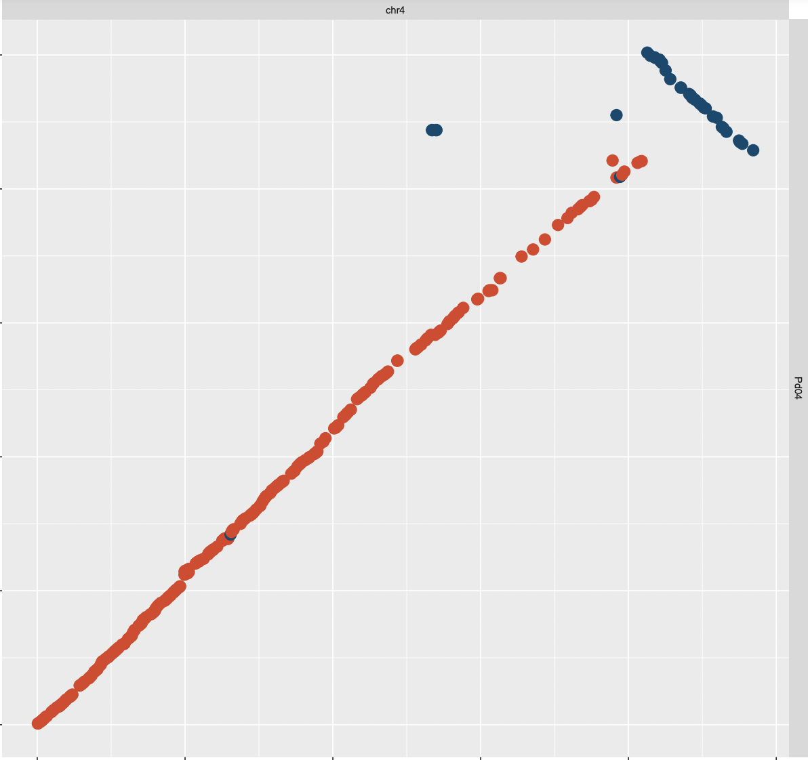

Back to home
Evolution of inversions in plant genomes
Plant genomes are known for their incredible diversity and complexity, even among eukaryotes, which has been challenging their assembly for decades.
In the era of long-read sequencing technologies, however, plant genomic resources are richer than ever, with multiple high-quality, chromosome-resolved genome assemblies published every year.
Taking advantage of this, we performed comparative analysis of 32 genus-paired eudicot genomes.
The raw material for evolution is genomic variation. Genomic variation can be found at micro-scale such as individual nucleotide mutation (substitution, insertion, deletion, single nucleotide polymorphism or SNPs), as well as more macro-scale variations. These variations that span a larger region in the genome are referred to as structural variations or SVs. They can occur at any sizes from small (a gene) to large segments (whole genome like polyploid). Examples include inversion, duplication, translocation. 
Role of inversions in adaptation and speciation
Inversions are particularly interesting because of their potential roles involved in adaptation. They suppress recombination in heterozygous individuals as chromosomes don't align properly during meiosis. The mechanisms of how inversions contribute to the adaptation or speciation process have been historically debated.
It is a good reminder to say that a genomic mutant of any type which results in phenotypic change is mostly deleterious in nature. What this means is that many SVs that might have occurred in the past do not exist in the observed population today because they died off in a single generation. Meanwhile, there are cases where inversions happened to be persisted so that they are observed in the present-day genomes. The local adaptation hypothesis has gained the most empirical support to explain this phenomenon. Genomic inversions spanning multiple genes (sometimes hundreds) have been observed and shown to be linked with the adaptation of species/populations to the local environment across many different organisms (e.g., sunflower, monkeyflower, invasive crab, white throated sparrow, ruff).
What about inversions that are neutral? How do they occur?
 While adaptive inversions gain a lot of attention, comparatively little is known about how inversions behave at neutral. For any evolutionary implications to make sense, one must show a significant variance from neutral expectations. Not all inversions are adaptive, nor need to be, in order to be fixed.There are well-established theories on inversions and their molecular mechanisms, but empirical support is scarce. The important questions that we tried to address in this project are: